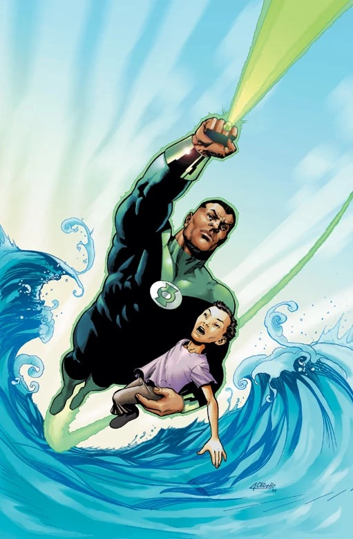

| Name |
Alias |
Image |
Superpower |
Weakness |
Personal/Additional notes |
| Zatanna |
Zatanna Zatara |
 |
Can cast magic spells by speaking commands backwards and can do almost anything with her power |
Overexhaustion or lack of confidence can make her powerless |
Everything I have seen Zatanna in I love |
| Martian Manhunter |
J'onn J'onzz/John Jones |
|
Powers include telekinesis, shape-shifting, density-shifting, enhanced strength, Martian vision, invisibility, and telepathy |
Fire is both an intense phobia and a weakness similar to kryptonite |
Even though he is one of the most powerful DC Comics characters, he is always underrated |
| Nightwing |
Richard/Dick Grayson |
|
Does not have superhuman abilities but is a hand-to-hand combat expert, strong gymnast, skilled detective, and former Robin |
Has human weaknesses such as fear of failure and harm to loved ones |
Dick Grayson is one of the oldest characters in DC Comics and has been my favorite character in both Teen Titans (original) and Young Justice |
| Green Lantern |
John Stewart |
 |
Can fly and create hard-light constructions with his Green Lantern power ring |
Powers will not function if he feels fear |
John Stewart is a more level-headed character than Hal Jordan, the Green Lantern everyone knows, and is better with hard-light creations |
| Black Canary |
Dinah Lance |
|
Can use her "canary cry," a sound wave powerful enough to break through metal, and is a strong martial artist |
Cannot use her power if her mouth is covered |
In more recent iterations, Dinah understands how destructive her ability is and prefers combat |

{kind=link}
{kind=link}
{kind=link}
{kind=link}